Плане́та (лат. planētae від грец. πλανήτης — той, що блукає, блукач) — великий, майже сферичний астрономічний об'єкт, який зазвичай перебуває на орбіті навколо зорі, зоряного залишку або коричневого карлика, але сам не є ані зорею, ані зоряним залишком, ані коричневим карликом. У Сонячній системі за суворим визначенням налічується вісім планет: планети земної групи — Меркурій, Венера, Земля та Марс; і газові гіганти — Юпітер, Сатурн, Уран та Нептун. Найпоширенішою теорією формування планет є небулярна гіпотеза, згідно з якою міжзоряна хмара колапсує з туманності, утворюючи молоду протозорю, яку оточує протопланетний диск. Планети формуються в цьому диску шляхом поступового накопичення речовини під дією гравітації — процесу, що зветься акрецією.
В античності планетами називали Сонце, Місяць і п'ять світил, видимих неозброєним оком, що переміщувалися на тлі зір — Меркурій, Венеру, Марс, Юпітер і Сатурн. Планети історично мали релігійне значення: багато культур ототожнювали небесні тіла з божествами, і ці зв'язки з міфологією та фольклором досі впливають на схеми найменування нововідкритих тіл Сонячної системи. Саму Землю визнали планетою лише після того, як геліоцентризм витіснив геоцентризм у XVI—XVII століттях.
З розвитком телескопів поняття «планета» розширилося і почало включати об'єкти, які видно лише за допомогою оптики: супутники інших планет, крижані гіганти Уран і Нептун, Цереру та інші тіла, згодом визнані частиною поясу астероїдів, а також Плутон, який виявився найбільшим тілом серед об'єктів поясу Койпера. Відкриття інших великих тіл у поясі Койпера, зокрема Ериди, спричинило дискусію щодо точного визначення терміна «планета». У 2006 році Міжнародний астрономічний союз ухвалив визначення планети в Сонячній системі, згідно з яким до планет належать чотири планети земної групи та чотири газові гіганти, натомість як Церера, Плутон та Ерида класифікуються як карликові планети. Водночас багато планетологів продовжують вживати термін «планета» ширше, поширюючи його на карликові планети та сферичні супутники, як-от Місяць.
Подальші досягнення астрономії призвели до відкриття понад п'яти тисяч планет за межами Сонячної системи — екзопланет. Вони часто мають незвичайні риси, яких немає у планет Сонячної системи: наприклад, гарячі юпітери — гігантські планети, що обертаються близько до своїх зір, як-от 51 Пегаса b, або дуже ексцентричні орбіти, як у HD 20782 b. Відкриття коричневих карликів і планет, більших за Юпітер, викликало нову дискусію щодо межі між планетою та зорею. Декілька екзопланет виявлено в зоні, придатній для життя своїх зір (де може існувати рідка вода на поверхні планети), проте надійних доказів існування життя на інших планетах поки що немає.
Панівною теорією планетоутворення є так звана небулярна гіпотеза, згідно з якою планети утворюються під час колапсу туманності в тонкий газово-пиловий диск. У центрі формується протозоря, оточена обертовим протопланетним диском.
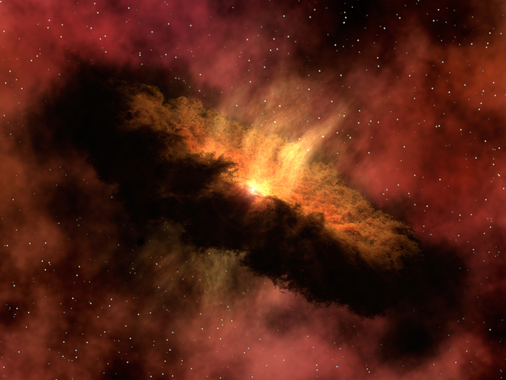
Унаслідок акреції (злипання частинок) пилинки у диску поступово зростають, утворюючи все більші тіла. Місцеві скупчення маси, відомі як планетезималі, пришвидшують цей процес, притягуючи навколишню речовину своєю гравітацією. Згодом вони стають достатньо щільними, щоб під дією гравітації стиснутися у протопланети. Коли маса протопланети перевищує масу Марса, вона починає накопичувати велику атмосферу, що суттєво збільшує ефективність захоплення планетезималей завдяки аерогідродинамічному опору. Залежно від історії акреції речовини та газу, результатом може бути газовий гігант, крижаний гігант або планета земної групи. Вважають, що регулярні супутники Юпітера, Сатурна й Урана формувалися подібним чином; однак, Тритон ймовірно був захоплений Нептуном, а Місяць і Харон, ймовірно, утворилися внаслідок зіткнень.
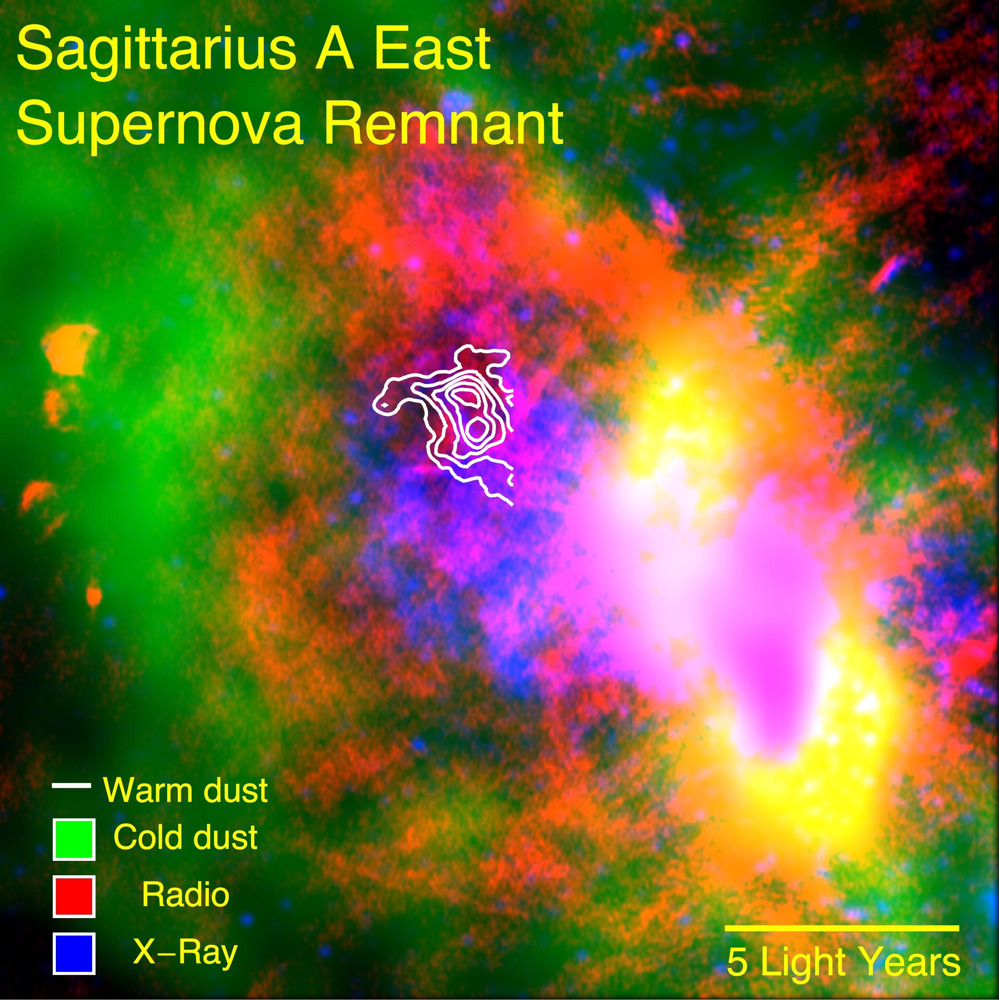
Коли протозоря виростає до такої міри, що в її ядрі розпочинається термоядерне горіння і вона стає зорею, залишковий диск поступово розсіюється зсередини назовні внаслідок фотовипаровування, дії сонячного вітру, ефекту Пойнтінга — Робертсона та інших процесів. Після цього навколо зорі (або навіть навколо інших протопланет) можуть залишатися численні протопланети, які з часом стикаються між собою. Унаслідок цього можуть утворюватися більші тіла або ж вивільнятися матеріал, який потім поглинається іншими протопланетами. Тіла, які набирають достатню масу, захоплюють більшість речовини зі свого орбітального оточення і стають планетами. Ті протопланети, яким вдається уникнути зіткнень, можуть бути захоплені гравітацією більших тіл і стати природними супутниками, або ж залишитися в поясах малих тіл, ставши карликовими планетами або малими тілами.
Енергійні зіткнення дрібніших планетезималей, а також радіоактивний розпад, розігрівають зростаючу планету, спричиняючи її часткове або повне плавлення. Унаслідок цього її внутрішня структура починає диференціюватися за густиною: щільніші матеріали опускаються до ядра. Менші землеподібні планети можуть втратити значну частину своєї первинної атмосфери через процеси акреції. Проте ці гази частково заміщуються викидами з мантії або ж поповнюються кометною речовиною. Невеликі планети з часом усе одно втрачають атмосферу внаслідок різноманітних механізмів втечі атмосфери.
З відкриттям і спостереженням планетних систем навколо інших зір з'являється можливість уточнювати або навіть змінювати загальноприйняті уявлення про процес формування планет. Рівень металічності — астрономічний термін, що позначає вміст хімічних елементів з атомним номером понад 2, тобто важчих за гелій, — істотно впливає на ймовірність формування планетної системи.
Таким чином, зорі популяції I, багаті на метали, з більшою ймовірністю матимуть розвинену планетну систему, ніж бідні на метали зорі популяції II.
Сьогодні у Сонячній системі відомо 8 планет: Меркурій, Венера, Земля, Марс, Юпітер, Сатурн, Уран, Нептун. У 2006 р. 26-та Генеральна асамблея Міжнародного астрономічного союзу скасувала статус планети для Плутона. Планети земної групи — Меркурій, Венера, Земля, Марс — близькі за розмірами і будовою, середня густина їх речовини становить 5,52—3,97 г/см3. До цієї групи примикають деякі великі супутники планет, які схожі за своїми властивостями до планет земної групи. Це супутники Юпітера Ганімед, Іо, Європа, Каллісто і супутник Сатурна Титан.
Утворилися планети з газопилової хмари навколо Сонця. Подібні пилові хмари (диски) можна сьогодні спостерігати біля деяких зір нашої Галактики. З погляду гірничої справи як сировинне джерело майбутнього, найбільшу цікавість становлять астероїди і найбільш досяжні із Землі планети — Місяць та Марс.
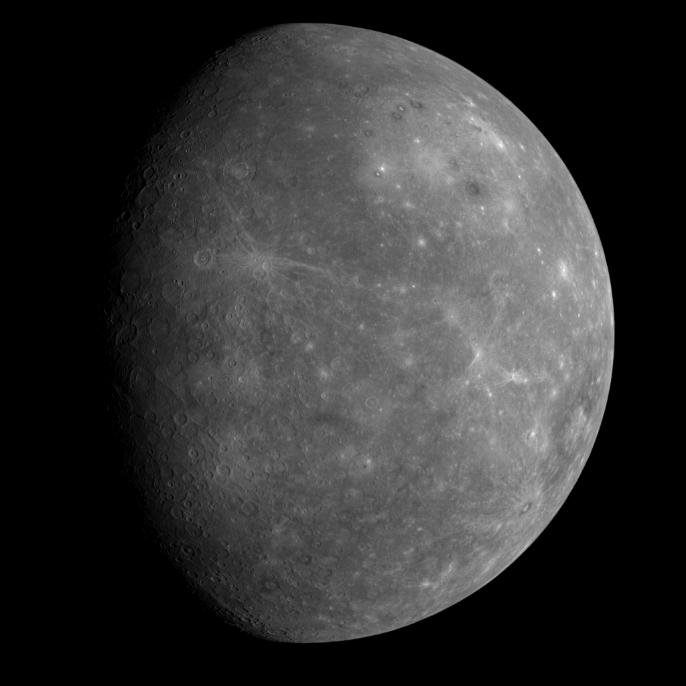
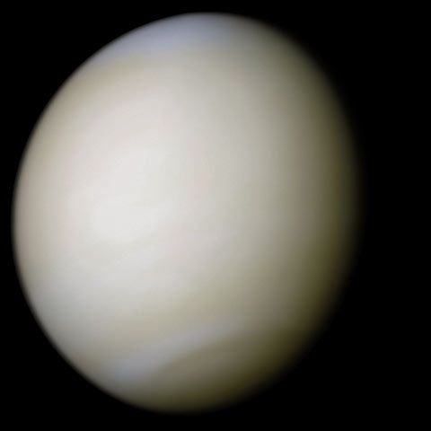
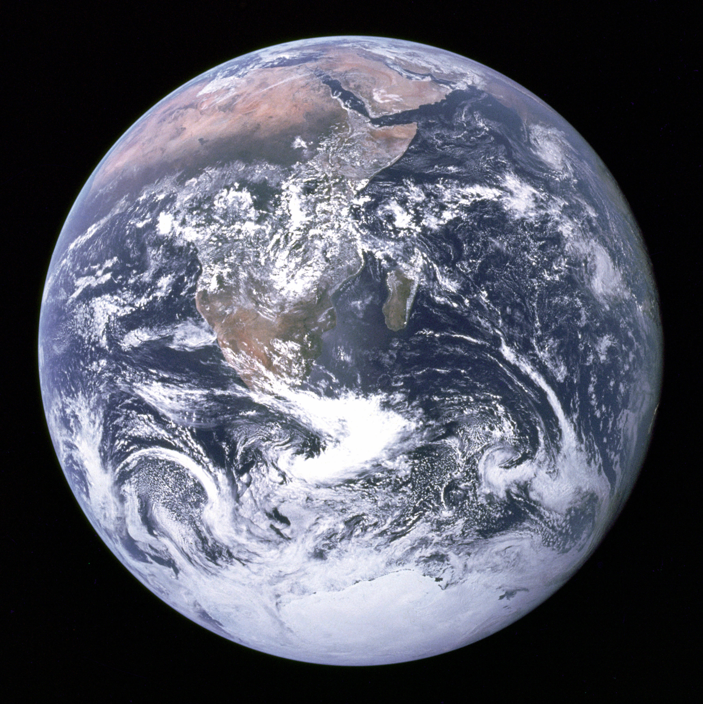
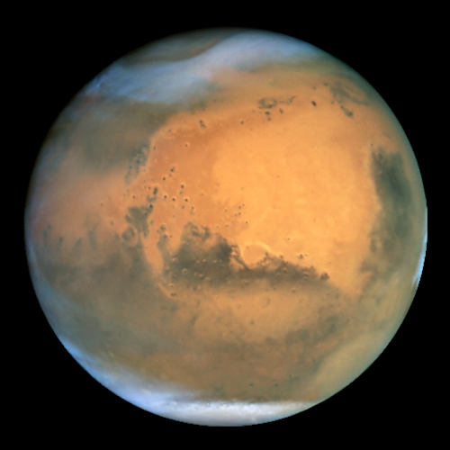
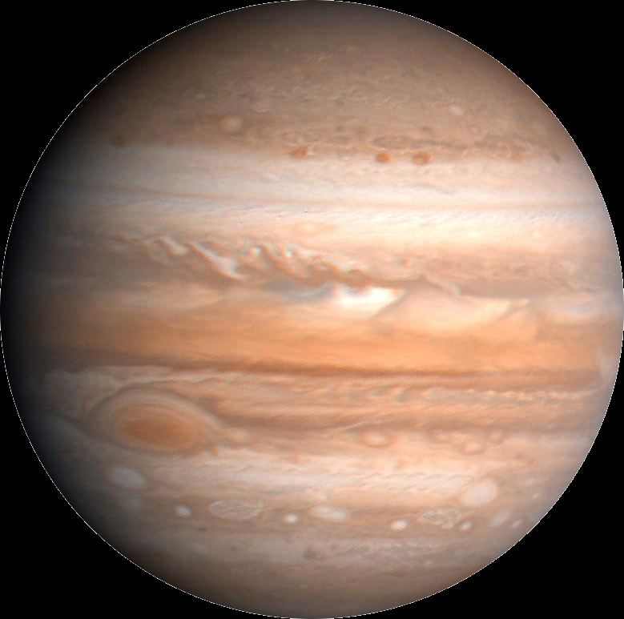
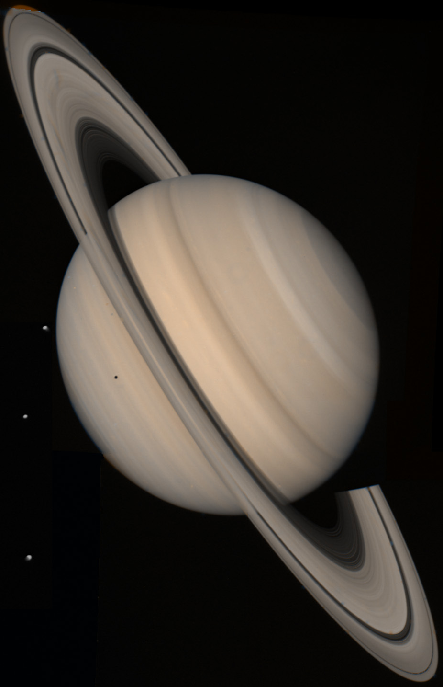
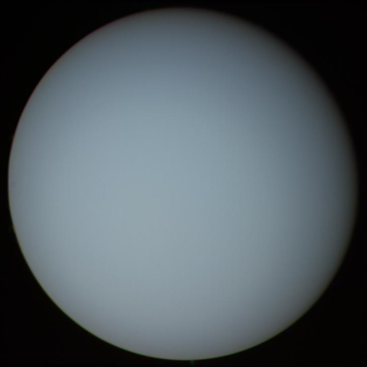
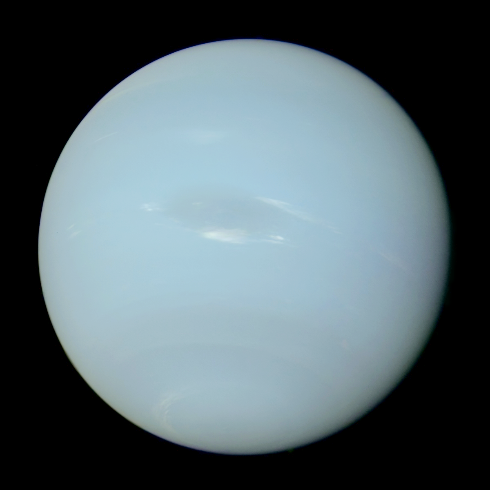
Екзопланета — це планета за межами Сонячної системи. Відомі екзопланети варіюються за розмірами — від газових гігантів приблизно вдвічі більших за Юпітер до трохи більших за Місяць. Аналіз даних гравітаційного мікролінзування свідчить про мінімум 1,6 планети в середньому на кожну зорю в Чумацькому Шляху.
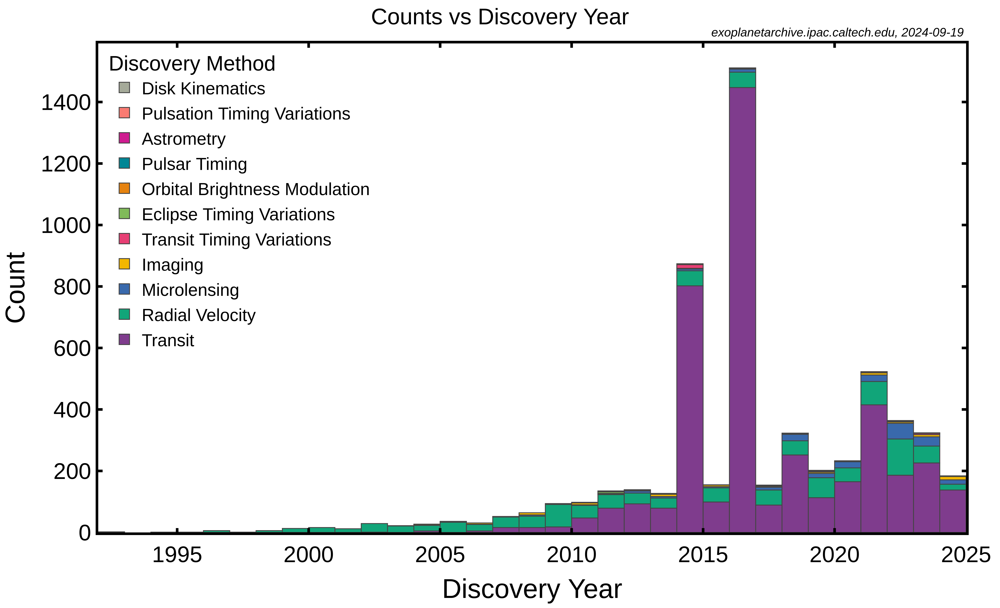
На початку 1992 року радіоастрономи Александер Вольщан і Дейл Фрейл оголосили про відкриття двох планет, що обертаються навколо пульсара PSR B1257+12. Це відкриття вважають першим надійно підтвердженим виявленням екзопланет. Науковці припускають, що ці планети утворилися з залишків диска, залишеного після вибуху тієї ж наднової, у якій утворився пульсар.
Перше підтверджене відкриття екзопланети, що обертається навколо звичайної зорі головної послідовності, відбулося 6 жовтня 1995 року, коли Мішель Майор і Дідьє Кело з Женевського університету оголосили про виявлення планети 51 Пегаса b, що обертається навколо зорі 51 Пегаса. До місії космічного телескопа «Кеплер» більшість відомих екзопланет були газовими гігантами, за масою подібними до Юпітера або навіть більшими, оскільки саме такі об'єкти найпростіше виявляти. Каталог кандидатів у екзопланети місії «Кеплер» складається переважно з планет розмірами до Нептуна і менших, аж до об'єктів, менших за Меркурій.
У 2011 році команда космічного телескопа «Кеплер» повідомила про відкриття перших екзопланет розміром із Землю, що обертаються навколо сонцеподібної зорі — Kepler-20e та Kepler-20f. Відтоді було виявлено понад 100 планет, розміри яких приблизно дорівнюють радіусу Землі, і 20 з них перебувають у зоні, придатній для життя — ділянці простору навколо зорі, де на поверхні землеподібної планети за достатнього атмосферного тиску може існувати рідка вода. Вважають, що кожна п'ята сонцеподібна зоря має планету розміром із Землю в зоні, придатній для життя, що свідчить про можливу наявність такої планети в межах 12 світлових років від Землі. Частота виникнення таких землеподібних планет є однією зі змінних у рівнянні Дрейка, яке оцінює кількість цивілізацій, здатних до контакту в Чумацькому Шляху.
Існують типи екзопланет, яких немає в Сонячній системі: суперземлі та мінінептуни, маса яких лежить між масою Землі та Нептуна. Об'єкти з масою менш як дві маси Землі, ймовірно, мають кам'янистий склад, як і Земля; масивніші, ймовірно, переважно складаються з летких речовин і газу, як Нептун. Відомі також планети, масивніші за Юпітер, маси яких заповнюють весь діапазон аж до мас коричневих карликів.
Виявлено екзопланети, що перебувають набагато ближче до своєї зорі, ніж будь-яка планета в Сонячній системі до Сонця. Наприклад, Меркурій на відстані 0,4 а.о. від Сонця, робить оберт за 88 днів, тоді як планети з ультракоротким періодом можуть обертатися навколо своїх зір менш ніж за добу. У системі Kepler-11 п'ять планет мають коротші орбітальні періоди, ніж Меркурій, і всі вони набагато масивніші. Існують гарячі юпітери, як 51 Пегаса b[35], які обертаються дуже близько до своєї зорі та можуть випаровуватись, залишаючи лише ядро — так звані хтонічні планети. Відомі й екзопланети, що перебувають значно далі від своєї зорі. Наприклад, Нептун на відстані 30 а.о. обертається за 165 років, тоді як деякі екзопланети перебувають на тисячах а.о. від зорі й здійснюють оберт за мільйони років (наприклад, COCONUTS-2b).
Планета-сирота (відома також під іншими назвами: планета-мандрівник, міжзоряна планета, вільна планета, квазіпланета, самотня планета, блукаюча планета) — об'єкт, що має масу, яку можна порівняти з планетарною і є, по суті, планетою, але не пов'язаний гравітаційно з жодною зорею, коричневим карликом, і навіть з іншою планетою (хоча може мати свої власні супутники).
Попри те, що кожна планета є неповторною за своїми фізичними характеристиками, серед них можна спостерігати чимало спільного, починаючи з наявності природних супутників, кілець та інших спільних ознак. Ці особливості розпізнають за притаманними їм ознаками — динамічними та фізичними властивостями для кожної з планет.
Динамічні характеристики планет пов'язані з усіма динамічними ознаками планети, як тіла в просторі, тобто, особливості руху небесного тіла (планети) у просторі. До них належать характеристики орбіти, нахил осі обертання, обертання та інші динамічні ознаки планет.
Відповідно до визначення, планета є тілом, що обертається навколо зорі. Таким чином відкидається можливість існування окремих планет, які можна було б назвати «планетами-одинаками». Траєкторія руху в гравітаційному полі іншого тіла (наприклад, зорі) має назву орбіти. Вона може мати форму кола, еліпса, параболи або гіперболи. У Сонячній системі всі планети обертаються власними орбітами в одному напрямку, у тому ж, у якому обертається навколо своєї осі й Сонце. Але принаймні одна з нещодавно відкритих екзопланет, WASP-17b, обертається в протилежний бік щодо обертання своєї зорі.
Період, протягом якого планета робить оберт навколо зорі, називається сидеричним періодом обертання або планетарним роком. Тривалість року дуже залежить від відстані планети до зорі, адже якщо планета перебуває далеко від зорі, то вона рухатиметься повільніше (оскільки на неї слабше впливатиме гравітації зорі), і, крім того, вона має здолати довший шлях.
Оскільки орбіта жодної з відомих планет не є точним колом, відстань між Сонцем і планетою на її орбіті змінюється. Точка орбіти, в якій планета найближче підходить до Сонця, має назву перигелій, тоді як найвіддаленіша точка орбіти називається афелій. Оскільки в перигелії планета перебуває найближче до світила, наслідком є збільшення швидкості руху планети, подібно до того, як високо кинутий камінь прискорюється, наближаючись до землі, а коли планета перебуває в афелії, її швидкість зменшується, подібно до того як той же кинутий вгору камінь сповільнюється у верхній точці свого польоту.
Орбіта будь-якої з планет визначається кількома елементами: • Ексцентриситет — визначає наскільки планетарна орбіта витягнута. Орбіти з невеликим (близьким до нуля) ексцентриситетом мають форму, близьку до кола, тоді як орбіти з великим (близьким до одиниці) ексцентриситетом еліптичної (витягнутої) форми. У планет Сонячної системи ексцентриситети невеликі, і їх орбіти майже як коло. Комети і об'єкти поясу Койпера (як і численні екзопланети) мають великий ексцентриситет та, відповідно, високоеліптичні орбіти. • Велика піввісь це відстань від планети до центра еліпса. Ця відстань не дорівнює відстані до планети у апоастрі чи періастрі, бо центральна зоря розташована не у центрі еліпса, а у його фокусі. • Нахил орбіти — кут між площиною орбіти і базовою площиною. У Сонячній системі базовою площиною вважають площину орбіти Землі, яку називають екліптикою. Орбіти всіх восьми планет Сонячної системи перебувають поблизу площини екліптики, тоді як комети і об'єкти поясу Койпера, наприклад Плутон, мають орбіти з більшими кутами нахилу. Для екзопланет такою площиною вважають небесну площину на оглядовій лінії з Землі. Точки, де планета перетинає базову площину, називаються висхідними і низхідними вузлами орбіти. Довгота висхідного вузла — це кут між базовою площиною і висхідним вузлом орбіти. Аргумент періастра (або аргумент перигелію) це кут між орбітальним висхідним вузлом і періастром (найближчою до зорі точкою на орбіті планети).
Планети мають різні кути осьового нахилу, тобто, вони лежать під певним кутом до площини екватора материнської зорі. Саме тому кількість світла, одержуваного тією чи іншою півкулею змінюється протягом року; оскільки північна півкуля планети більше освітлюється, ніж південна півкуля, або ж навпаки. Як наслідок, на більшості планеті відбувається зміна сезонів, тобто, зміна клімату протягом року. Час, коли одна з півкуль найбільше обернена до Сонця, називається сонцестоянням. Протягом одного обертання орбітою (одного витка планети по своїй орбіті) трапляється два сонцестояння; коли кожна з півкуль перебуває в літньому сонцестоянні і день там найдовший, тоді як інша півкуля перебуває в зимовому сонцестоянні, з його надзвичайно коротким днем. Внаслідок такого розташування, півкулі отримують різну кількість світла і тепла, що слугує причиною щорічних змін погодних умов на планеті.
Планети мають різні кути осьового нахилу, тобто, вони лежать під певним кутом до площини екватора материнської зорі. Саме тому кількість світла, одержуваного тією чи іншою півкулею змінюється протягом року; оскільки північна півкуля планети більше освітлюється, ніж південна півкуля, або ж навпаки. Як наслідок, на більшості планеті відбувається зміна сезонів, тобто, зміна клімату протягом року. Час, коли одна з півкуль найбільше обернена до Сонця, називається сонцестоянням. Протягом одного обертання орбітою (одного витка планети по своїй орбіті) трапляється два сонцестояння; коли кожна з півкуль перебуває в літньому сонцестоянні і день там найдовший, тоді як інша півкуля перебуває в зимовому сонцестоянні, з його надзвичайно коротким днем. Внаслідок такого розташування, півкулі отримують різну кількість світла і тепла, що слугує причиною щорічних змін погодних умов на планеті. Осьовий нахил Юпітера надзвичайно малий, і сезонні зміни там найменші, тоді як Уран, навпаки, має настільки великий осьовий нахил, що обертається навколо Сонця майже «на боці», і під час сонцестоянь одна з його півкуль постійно перебуває під Сонячним світлом, а інша постійно знаходиться в темряві. Що стосується екзопланет, то їх осьові нахили невідомі напевно, проте більшість «гарячих юпітерів», теоретично, мають дуже малий нахил осі, що є наслідком близькості до самої зорі.
Крім того, що планети обертаються власними орбітами навколо зорі, вони ще й крутяться навколо своєї осі. Період обертання планети навколо осі отримав визначення — доба. Більшість планет Сонячної системи крутяться навколо власної осі в тому ж напрямку, в якому вони обертаються навколо Сонця, тобто, проти годинникової стрілки, що відзначено відносно північного полюса Сонця. Тоді як дві планети — Венера і Уран обертаються за годинниковою стрілкою, хоча надзвичайний осьовий нахил Урана породжує суперечки, що ж вважати південним і північним полюсом самої планети, як наслідок — чи обертається він проти годинникової, а чи за годинниковою стрілкою, однак якої б думки не дотримувалися сперечальники щодо полюсів Урана, вони визнають його ретроградний тип обертання. Також спостерігається суттєва різниця між тривалістю доби на планетах: Венері потрібно 243 Земних доби для одного оберту навколо осі, тоді як газовим гігантам — всього кілька годин. Період обертання для екзопланет не відомий, проте, близьке розташування до зір «гарячих Юпітерів» означає що на одному боці планети панує вічна ніч, а на другому — вічний день (оскільки орбіта й обертання узгоджені).
Один з критеріїв, що визначає небесне тіло як планету — це вільні від інших подібних об'єктів околиці її орбіти. Планета, яка накопичила достатню масу, своїм гравітаційним впливом має зібрати всі тіла поблизу власної орбіти і приєднати їх (чи перетворити на супутники), або навпаки — розігнати. Таким чином, вона перебуватиме на своїй орбіті в ізоляції, не поділяючи її з іншими об'єктами, які порівняні за розміром. Цей критерій статусу планети було ухвалено Міжнародним астрономічним союзом (МАС) у серпні 2006 року. Саме за цим критерієм Плутон було позбавлено статусу планети, а Ерида і Церера так і не набули його. Зазначені тіла належать до карликових планет. Слід зазначити, що ухвалене визначення планети наразі стосується лише Сонячної системи. Потужними телескопами було виявлено деяку кількість зоряних систем, які перебувають на стадії протопланетарного диска мають ознаки «чистих орбіт» у протопланет.
Під дією гравітації планети набувають приблизно кулястої форми, тому їхні розміри зазвичай виражають через середній радіус. Водночас планети не є ідеальними сферами: наприклад, обертання Землі спричиняє її незначне сплющення біля полюсів і формування екваторіального потовщення. Тому точнішим наближенням форми Землі є сплюснутий сфероїд, екваторіальний діаметр якого на 43 км більший за полюсний діаметр. Загалом форму планети описують, наводячи полярний і екваторіальний радіуси сфероїда або задаючи референтний еліпсоїд. На основі цих параметрів можна обчислити сплющення планети, її площу поверхні та об'єм, а також визначити нормальну силу тяжіння, знаючи розміри, форму, швидкість обертання й масу.
Визначальною фізичною характеристикою планети є її маса, достатня для того, щоб сила власної гравітації переважала електромагнітні сили, які зв'язують її речовину, і приводила тіло до стану гідростатичної рівноваги. Фактично це означає, що всі планети мають кулясту або сфероїдальну форму. До певної маси об'єкт може зберігати неправильну форму, однак після досягнення порогового значення, яке залежить від хімічного складу, гравітація починає стягувати речовину до центра мас, і об'єкт набуває кулястої форми.
Маса є основною ознакою, за якою планети відрізняють від зір. У Сонячній системі не існує об'єктів із масами між масами Сонця й Юпітера, проте екзопланети таких мас відомі. Нижню межу зоряної маси оцінюють приблизно у 75–80 мас Юпітера (MJ). Деякі автори пропонують вважати це верхньою межею для планет, аргументуючи тим, що внутрішня фізика об'єктів майже не змінюється між масою близько однієї маси Сатурна (початок помітного самостиснення) та початком ядерного горіння водню й переходом до стадії червоного карлика. За мас близько 13 MJ (принаймні для об'єктів із сонячним ізотопним складом) виникають умови для ядерного синтезу дейтерію; це значення іноді також пропонують використовують як верхню межу мас планет, хоча горіння дейтерію триває недовго, і більшість коричневих карликів давно його завершил. Загальної згоди щодо цього немає: енциклопедія екзопланет включає об'єкти масою до 60 MJ[72], а Exoplanet Data Explorer — до 24 MJ.
Найменшою відомою екзопланетою з точно визначеною масою є PSR B1257+12A — одна з перших відкритих екзопланет, виявлена 1992 року на орбіті навколо пульсара. Її маса становить приблизно половину маси Меркурія. Ще меншим є WD 1145+017 b, що обертається навколо білого карлика; його маса приблизно відповідає масі карликової планети Гаумеа, тому його зазвичай класифікують як малу планету. Найменшою відомою планетою, що обертається навколо зорі головної послідовності (не рахуючи Сонця), є Kepler-37 b; її маса (і радіус), імовірно, лише трохи перевищує масу Місяця. Найменшим об'єктом у Сонячній системі, який зазвичай вважають геофізичною планетою, є супутник Сатурна Мімас, радіус якого становить близько 3,1 % радіуса Землі, а маса — приблизно 0,00063 % земної[76]. Менший супутник Сатурна Феба, який нині має неправильну форму, з радіусом 1,7 % земного і масою 0,00014 % земної, імовірно, досяг гідростатичної рівноваги та диференціації на ранньому етапі своєї історії, але згодом втратив правильну форму внаслідок інтенсивних зіткнень. Деякі астероїди можуть бути уламками протопланет, які почали акумулювати речовину й диференціюватися, але зазнали катастрофічних зіткнень, унаслідок чого до наших днів збереглося лише металеве або кам'янисте ядро, або повторно зібраними уламками цих зіткнень.
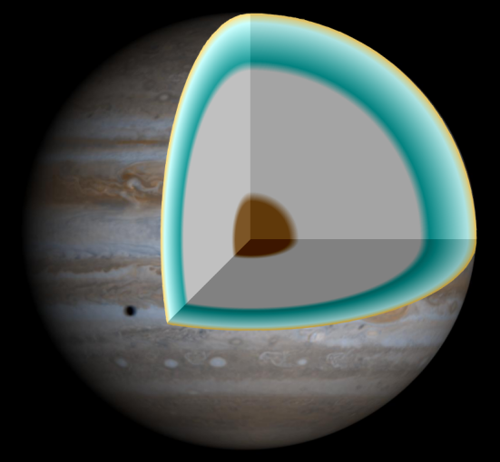
Кожна планета на початковому етапі свого існування перебувала в повністю рідкому стані; на ранніх етапах її еволюції щільніші й важчі речовини опускалися до центра, тоді як легші концентрувалися ближче до поверхні. Унаслідок цього всі планети мають диференційовану внутрішню будову, складаючись зі щільного планетного ядра та мантії, яка є рідкою або принаймні колись була рідкою. Мантії планет земної групи вкриті твердою корою, тоді як у планет-гігантів мантія поступово переходить в атмосферу. Планети земної групи мають ядра з таких елементів, як залізо і нікель, та мантії, складені з силікатів. Вважають, що Юпітер і Сатурн мають ядра з кам'янистої й металевої речовини, оточені мантіями з металічного водню. Уран і Нептун, які є меншими за розмірами, мають кам'янисті ядра, оточені мантіями з води, аміаку, метану та інших летких речовин. Рух рідкої речовини в ядрах цих планет створює геодинамо, яке генерує магнітне поле. Подібні процеси диференціації, ймовірно, відбувалися також у деяких великих супутників і карликових планет, однак не завжди завершувалися повністю: Церера, Каллісто й Титан, імовірно, залишилися неповністю диференційованими. Астероїд Веста, хоч і не належить до карликових планет через сильне порушення форми внаслідок зіткнень, має диференційовану внутрішню будову, подібну до будови Венери, Землі та Марса.
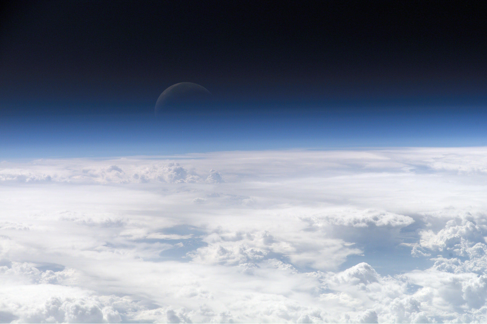
Усі планети Сонячної системи, крім Меркурія, мають істотні атмосфери, оскільки їхня гравітація достатньо сильна, щоб утримувати гази поблизу поверхні. Найбільший супутник Сатурна — Титан — також має потужну атмосферу, щільнішу за земну; найбільший супутник Нептуна — Тритон — і карликова планета Плутон мають значно розрідженіші атмосфери. Великі планети-гіганти мають достатню масу, щоб утримувати значні кількості легких газів — водню та гелію, тоді як менші планети втрачають ці гази в міжпланетний простір. Аналіз екзопланет свідчить, що поріг здатності утримувати такі легкі гази лежить приблизно на рівні 2,0+0,7 −0,6 M🜨, тож Земля і Венера перебувають поблизу максимально можливих розмірів кам'янистих планет.
Склад атмосфери Землі відрізняється від атмосфер інших планет, оскільки різноманітні життєві процеси, що відбувалися на планеті, призвели до накопичення вільного молекулярного кисню. Атмосфери Марса й Венери переважно складаються з вуглекислого газу, однак істотно різняться за густиною: середній тиск на поверхні Марса становить менш ніж 1 % від земного, тоді як середній тиск атмосфери Венери на поверхні планети приблизно у 92 рази перевищує земний. Імовірно, атмосфера Венери сформувалася внаслідок вибухового парникового ефекту, перетворивши Венеру на планету з найвищою температурою поверхні — навіть вищою, ніж на Меркурії. Попри ворожі умови на поверхні, температура й тиск на висоті приблизно 50–55 км в атмосфері Венери близькі до земних (єдине таке місце в Сонячній системі поза Землею), і цю область пропонували як можливу базу для майбутніх пілотованих програм. Титан має єдину, окрім земної, щільну планетну атмосферу в Сонячній системі, багату на азот. Так само як умови на Землі близькі до потрійної точки води, що дозволяє їй існувати на поверхні у трьох агрегатних станах, умови на Титані близькі до потрійної точки метану.
На планетні атмосфери впливають зміни інсоляції або внутрішньої енергії, що зумовлює формування динамічних погодніх систем, таких як урагани (на Землі), планетарні пилові бурі (на Марсі), антициклон, більший за Землю, на Юпітері (відомий як Велика червона пляма), а також «прогалини» в атмосфері на Нептуні. На екзопланетах виявили погодні структури, зокрема гарячу область на HD 189733 b, удвічі більші за Велику червону пляму, а також хмари на гарячому юпітері Kepler-7b, суперземлі Глізе 1214 b та інших.
Гарячі юпітери через надзвичайну близькість до своїх зір зазнають втрати атмосфери в космічний простір під дією зоряного випромінювання — подібно до хвостів комет. У таких планет можуть виникати значні контрасти температур між денною та нічною сторонами, що породжує надзвукові вітри, хоча на це впливає багато чинників, а деталі атмосферної динаміки, що визначають різницю температур між півкулями, є складними.
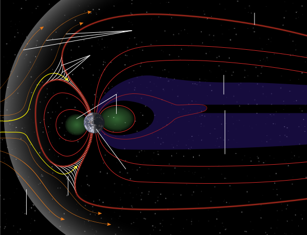
Важливою характеристикою планет є їхні власні магнітні моменти, які зумовлюють існування магнітосфер. Наявність магнітного поля свідчить про те, що планета залишається геологічно активною. Інакше кажучи, планети з магнітними полями мають у своїх надрах потоки електропровідного матеріалу, які й породжують магнітні поля. Ці поля істотно змінюють взаємодію планети із сонячним вітром. Намагнічена планета формує навколо себе порожнину в потоці сонячного вітру — магнітосферу, у яку вітер не може проникнути. Магнітосфера може бути значно більшою за саму планету. Натомість планети без глобальнних магнітних полів мають лише невеликі індуковані магнітосфери, що виникають унаслідок взаємодії іоносфери із сонячним вітром і не забезпечують ефективного захисту планети.
Із восьми планет Сонячної системи лише Венера і Марс не мають значного магнітного поля. Серед магнітних планет найслабше магнітне поле має Меркурій, і воно лише ледь відхиляє сонячний вітер. Супутник Юпітера Ганімед має магнітне поле, у кілька разів сильніше за земне, а магнітне поле самого Юпітера є найпотужнішим у Сонячній системі (настільки інтенсивним, що становить серйозну загрозу для здоров'я майбутніх пілотованих місій до всіх його супутників, розташованих усередині орбіти Каллісто). Магнітні поля інших планет-гігантів, виміряні на їхніх поверхнях, за напруженістю близькі до земного, проте їхні магнітні моменти значно більші. Магнітні поля Урана й Нептуна сильно нахилені відносно осей обертання планет і зміщені від їхніх центрів.
У 2003 році група астрономів на Гаваях, спостерігаючи зорю HD 179949, виявила яскраву пляму на її поверхні, яку, ймовірно, створила магнітосфера гарячого юпітера, що обертається навколо цієї зорі.
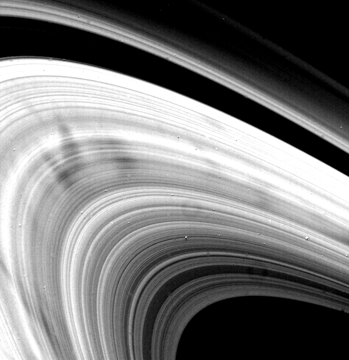
Кілька планет або карликових планет Сонячної системи (зокрема Нептун і Плутон) мають орбітальні періоди, що перебувають у стані резонансу між собою або з меншими тілами. Такі явища поширені й у системах супутників (наприклад, резонанс між Іо, Європою та Ганімедом навколо Юпітера або між Енцеладом і Діоною навколо Сатурна). Усі планети, крім Меркурія та Венери, мають природні супутники. Земля має один супутник, Марс — два, а планети-гіганти — багато супутників, що утворюють складні системи, подібні до мініатюрних планетних систем. Усі загальновизнані карликові планети, за винятком Церери та Седни, мають принаймні один відомий супутник. Багато супутників планет-гігантів мають риси, подібні до властивостей планет земної групи та карликових планет, а деякі з них розглядають як потенційно придатні для існування життя (передусім Європу та Енцелад).
Усі чотири планети-гіганти оточені кільцями різних розмірів і складності. Кільця складаються переважно з пилу або дрібних твердих частинок, але можуть містити й крихітні супутники, гравітація яких формує та підтримує їхню структуру. Хоча походження планетних кілець достеменно не з'ясоване, вважають, що вони виникли внаслідок руйнування природних супутників, які опинилися нижче за межу Роша своєї планети й зазнали припливного руйнування. Карликові планети Гаумеа і Квавар також мають кільця.
Навколо екзопланет поки що не виявлено ані супутників, ані кілець. Вважають, що субкоричневий карлик Cha 110913-773444, який іноді описують як міжзоряну планету, оточений крихітним протопланетним диском, а навколо субкоричневого карлика OTS 44 виявлено масивний протопланетний диск із масою щонайменше 10 мас Землі.
Ідея планет змінювалася протягом історії астрономії — від божественних світил античності до матеріальних об'єктів наукової доби. Поняття планети розширилось: тепер воно охоплює світи не лише в межах Сонячної системи, а й у численних інших позасонячних системах. Загальноприйняте визначення того, що вважати планетою, неодноразово змінювалося. Свого часу до планет зараховували астероїди, супутники та карликові планети, зокрема Плутон, і навіть сьогодні зберігається певна неоднозначність у цьому питанні.

П'ять класичних планет Сонячної системи, які можна побачити неозброєним оком, були відомі ще з давніх часів і мали значний вплив на міфологію, релігійні уявлення про Всесвіт і давню астрономію. Стародавні астрономи помічали, що деякі світла переміщуються небом, на відміну від «нерухомих зір», які зберігали стале відносне розташування[128]. Давні греки називали ці світила πλάνητες ἀστέρες, «мандрівні зорі» або просто πλανῆται «мандрівники», від чого походить сучасне слово «планета». У Стародавній Греції, Китаї, Вавилоні та загалом у всіх донаукових цивілізаціях майже повсюдно вважали, що Земля — це центр Всесвіту, а всі «планети» обертаються навколо неї. Такий погляд був зумовлювався тим, що зорі й планети, здавалося, щоденно оберталися навколо Землі, а також наочними спостереженнями, згідно з якими Земля здавалася нерухомою, твердою й стабільною.
Першою цивілізацією, яка створила функціональну теорію планет, були вавилоняни, що жили в Месопотамії в І–ІІ тисячоліттях до н. е. Найдавнішим з відомих планетарних астрономічних текстів є Табличка Венери Аммі-цадуки — копія VII століття до н. е. переліку спостережень руху планети Венера, яка, ймовірно, походить ще з ІІ тисячоліття до н. е. MUL.APIN — це пара клинописних табличок, що датуються VII століттям до н. е., у яких описано рух Сонця, Місяця і планет протягом року. Пізня вавилонська астрономія стала джерелом західної астрономії та загалом усіх західних точних наук. У новоасирійський період у VII столітті до н. е. було укладено текст Енума Ану Енліль, який містить перелік знамень і їхній зв'язок із різними небесними явищами, зокрема рухами планет. Вавилонські астрономи вже знали всі 5 класичних планет (Венера та Меркурій, а також верхні планети Марс, Юпітер і Сатурн), й астрономи не змогли розширити це список аж до винайдення телескопа.
Стародавні греки спочатку не надавали планетам такого значення, як вавилоняни. У VI—V століттях до н. е. піфагорійці розробили, вірогідно, власну незалежну планетарну теорію, згідно з якою Земля, Сонце, Місяць і планети оберталися навколо «Центрального Вогню», що розташовувався в центрі Всесвіту. Піфагора або Парменіда вважають першими, хто ототожнив вечірню зорю (Геспер) та ранкову зорю (Фосфор) як одне й те саме світило — Афродіту, грецький відповідник латинської Венери. Проте це вже давно було відомо в Месопотамії[145][146]. У III столітті до н. е. Арістарх Самоський запропонував геліоцентричну модель, згідно з якою Земля й інші планети обертаються навколо Сонця. Геоцентрична система залишалася домінантною аж до наукової революції.
До I століття до н. е., у період еллінізму, греки почали створювати власні математичні схеми для передбачення положень планет. Ці схеми, засновані на геометрії, а не на арифметиці вавилонян, згодом перевершили останніх за складністю та повнотою й дозволили досить точно описати видимі неозброєним оком рухи планет. Найповніше ці теорії викладені в «Альмагесті» Птолемея, написаному у II столітті н. е. Модель Птолемея стала настільки популярною, що витіснила всі попередні астрономічні системи й залишалась основним астрономічним трактатом Західного світу протягом 13 століть. Для греків і римлян було відомо сім планет, кожна з яких, як вважалося, оберталася навколо Землі за складними законами, викладеними Птолемеєм. У порядку від Землі (за Птолемеєм, із сучасними назвами) це були: Місяць, Меркурій, Венера, Сонце, Марс, Юпітер і Сатурн.
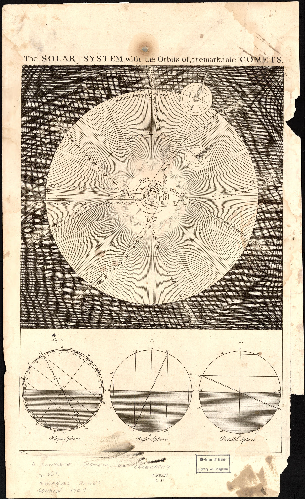
Після падіння Західної Римської імперії астрономія продовжувала розвиватися в Індії та середньовічному ісламському світі. 499 року індійський астроном Аріабгата запропонував планетарну модель, яка прямо включала обертання Землі навколо власної осі — він пояснював цим видимий рух зір зі сходу на захід. Він також припускав, що орбіти планет є еліпсами[149]. Ідеї Аріабгати знайшли особливу підтримку на півдні Індії, де його принципи, зокрема щоденне обертання Землі, стали основою для низки наступних праць.
Астрономія золотої доби ісламу здебільшого розвивалася на території Близького Сходу, Центральної Азії, Аль-Андалусу та Північної Африки, а згодом — на Далекому Сході та в Індії. Ісламські вчені, зокрема універсал Ібн аль-Хайсам, зазвичай дотримувалися геоцентризму, хоча й критикували систему епіциклів Птолемея та шукали їй альтернативи. Астроном X століття Абу Саїд ас-Сіджзі визнавав, що Земля обертається навколо своєї осі. У XI столітті Авіценна спостерігав транзит Венери. Його сучасник Аль-Біруні розробив метод визначення радіуса Землі за допомогою тригонометрії, який, на відміну від старішого методу Ератосфена, потребував лише спостережень із вершини однієї гори.
З початком Наукової революції та утвердженням геліоцентричної моделі Коперника, Галілея і Кеплера змінилося використання терміна «планета»: замість об'єкта, що рухається небом відносно нерухомих зір, ним стали називати тіло, яке обертається навколо Сонця — безпосередньо (первинна планета) або опосередковано (вторинна планета чи супутник). Унаслідок цього Землю зарахували до списку планет, а Сонце з нього вилучили. Коперниківський список первинних планет залишався незмінним до 1781 року, коли Вільям Гершель відкрив Уран.
Коли у XVII столітті відкрили чотири супутники Юпітера (так звані Галілеєві супутники) та п'ять супутників Сатурна, їх разом із Місяцем віднесли до категорії «супутникових» або «вторинних планет», що обертаються навколо первинних планет. Упродовж наступних десятиліть для них закріпилася коротша назва — «супутники». Загалом учені вважали супутники планетами приблизно до 1920-х років, хоча поза науковим середовищем таке вживання слова було не надто поширеним.
У першому десятилітті XIX століття відкрили чотири нові «планети»: Цереру (1801), Палладу (1802), Юнону (1804) і Весту (1807). Згодом стало зрозуміло, що вони суттєво відрізняються від раніше відомих планет: усі вони займали спільну ділянку простору між Марсом і Юпітером (пояс астероїдів), а їхні орбіти подекуди перекривалися. У цьому регіоні очікували існування лише однієї планети, а самі тіла виявилися значно меншими за всі інші планети. Висловлювали навіть припущення, що це уламки більшої планети, яка розпалася. Гершель назвав ці об'єкти астероїдами (від грецького «зореподібний»), оскільки навіть у найбільші телескопи вони виглядали як зорі без помітного диска.
Ситуація залишалася відносно стабільною протягом чотирьох десятиліть, однак у 1840-х роках відкрили ще кілька астероїдів (Астрея у 1845; Геба, Ірида та Флора у 1847; Метіда у 1848; Гігея у 1849). Нові «планети» з'являлися майже щороку, і астрономи почали складати окремі каталоги астероїдів (малих планет), відокремлюючи їх від великих планет і надаючи їм числові позначення замість абстрактних планетних символів, хоча певний час їх і далі вважали малими планетами.
Нептун відкрили у 1846 році; його положення передбачили завдяки гравітаційному впливу на орбіту Урана. Оскільки орбіта Меркурія, як здавалося, теж зазнавала подібних збурень, наприкінці XIX століття припускали існування ще однієї планети, ще ближчої до Сонця. Зрештою розбіжності між орбітою Меркурія та передбаченнями ньютонівської механіки пояснила вдосконалена теорія гравітації — загальна теорія відносності Ейнштейна.
Плутон відкрили 1930 року. Перші спостереження дали підстави вважати його більшим за Землю, тому об'єкт одразу визнали дев'ятою великою планетою. Подальші дослідження показали, що його розміри значно менші: у 1936 році Рей Літтлтон висловив припущення, що Плутон може бути втраченим супутником Нептуна, а у 1964 році Фред Віппл припустив, що Плутон може бути кометою. Відкриття у 1978 році його великого супутника Харона показало, що маса Плутона становить лише 0,2 % маси Землі. Оскільки це все ж було значно більше, ніж маса будь-якого відомого астероїда, і на той час ще не відкрили інших транснептунових об'єктів, Плутон зберігав статус планети й остаточно втратив його лише у 2006 році.
У 1950-х роках Джерард Койпер опублікував роботи про походження астероїдів. Він звернув увагу на те, що астероїди зазвичай не є сферичними, як вважали раніше, а сімейства астероїдів є залишками зіткнень. Відтак Койпер розрізнив найбільші астероїди як «справжні планети», а менші — як уламки зіткнень. Починаючи з 1960-х років термін «мала планета» здебільшого поступився терміну «астероїд», і згадки про астероїди як планети в науковій літературі стали рідкісними, за винятком найбільших тіл, які зазнали геологічної еволюції, — Церери, а рідше також Паллади та Вести.
Початок дослідження Сонячної системи автоматичними космічними апаратами у 1960-х роках дав новий поштовх планетології. У цей період знову постало питання визначення супутників: планетологи почали розглядати великі супутники також як планети, тоді як астрономи, не пов'язані безпосередньо з планетологією, зазвичай цього не робили. (Це не цілком збігається з визначеннями попереднього століття, коли всі супутники зараховували до вторинних планет, навіть несферичні, як-от сатурнів Гіперіон або марсіанські Фобос і Деймос.) Усі вісім великих планет і їхні супутники планетної маси з того часу досліджували космічні апарати, так само як і багато астероїдів та карликові планети Цереру й Плутон; однак досі єдиним тілом планетної маси за межами Землі, яке безпосередньо досліджували люди, залишається Місяць.
У 1990-х і на початку 2000-х років дедалі більше астрономів почали наполягати на позбавленні Плутона статусу планети, оскільки в тій самій ділянці Сонячної системи — у поясі Койпера — виявили багато подібних за розмірами об'єктів[. При цьому часто згадували прецедент позбавлення астероїдів статусу планет, хоча тоді рішення ухвалили з огляду на їхні геофізичні відмінності від планет, а не через їхнє перебування в поясі астероїдів. Деякі з найбільших транснептунових об'єктів, зокрема Квавар, Седну, Ериду та Гаумею, популярна преса навіть проголошувала десятою планетою.
Оголошення про відкриття Ериди у 2005 році — об'єкта, маса якого на 27 % більша за масу Плутона, — стало поштовхом до вироблення офіційного визначення планети, адже визнання Плутона планетою логічно вимагало б зарахувати до планет і Ериду. Оскільки для найменування планет і непланетних тіл діяли різні процедури, ситуація стала нагальною: за чинними правилами Ериду не можна було назвати, не визначивши, що саме вважати планетою. Тоді також вважали, що розмір, за якого транснептуновий об'єкт набуває кулястої форми, приблизно відповідає такому розміру для супутників планет-гігантів (близько 400 км у діаметрі). Це означало б існування близько 200 кулястих об'єктів у поясі Койпера та ще тисяч за його межами. Багато астрономів стверджували, що громадськість не сприйме визначення, яке різко збільшить кількість планет.
Визначення планети в Сонячній системі за Міжнародним астрономічним союзом
1. Об’єкт обертається навколо Сонця
2. Об’єкт має достатню масу, щоб його власна гравітація подолала сили жорсткості твердого тіла й надала йому гідростатично рівноважну форму (майже кулясту)
3. Об’єкт очистив околиці своєї орбіти
Альтернативне визначення: "дозоряне за масою тіло, яке ніколи не зазнавало ядерного синтезу й має достатню гравітацію, щоб бути округлим завдяки гідростатичній рівновазі, незалежно від його орбітальних параметрів"
У Сонячній системі така маса зазвичай є меншою за масу, необхідну тілу для очищення власної орбіти; отже, деякі об'єкти, які геофізичні визначення вважають «планетами», не відповідають визначенню МАС, зокрема Церера та Плутон. (На практиці вимогу гідростатичної рівноваги повсюдно пом'якшують до вимоги округлення й ущільнення під дією власної гравітації; Меркурій фактично не перебуває в гідростатичній рівновазі, однак його беззастережно зараховують до планет.) Прихильники таких підходів часто стверджують, що розташування об'єкта не повинно мати значення, а статус планети слід визначати за його внутрішніми властивостями. Для таких невеликих за розмірами планет астрономи вживають термін «карликові планети», однак планетні геологи й надалі розглядають їх як планети, попри визначення МАС.
Кількість карликових планет навіть серед відомих об'єктів залишається невизначеною. У 2019 році Ґранді та ін. на підставі низьких густин деяких середніх за розмірами транснептунових об'єктів дійшли висновку, що граничний розмір, необхідний для досягнення рівноваги транснептуновим об'єктом, насправді значно більший, ніж для крижаних супутників планет-гігантів, і становить близько 900—1000 км у діаметрі. Водночас існує загальний консенсус щодо Церери в поясі астероїдів та щодо восьми транснептунових об'єктів, які, ймовірно, перевищують цей поріг: Орк, Плутон, Гаумеа, Квавар, Макемаке, Гунгунг, Ерида, Седна.
Планетні геологи можуть зараховувати дев'ятнадцять відомих супутників планетної маси до «супутникових планет», зокрема земний Місяць, як це ще робили давні астрономи. Деякі дослідники йдуть ще далі та включають до планет відносно великі, тіла, які зазнали геологічної еволюції, однак нині не є цілком сферичними, зокрема Паллада й Веста; округлі тіла, які зазнали повного руйнування внаслідок зіткнень і згодом знову акумулювалися, як-от Гігея; або навіть усі об'єкти з діаметром щонайменше як у супутника Сатурна Мімаса, найменшого супутника планетної маси. (До цієї категорії можуть потрапляти навіть тіла, що не є округлими, але випадково більші за Мімас, як-от супутник Нептуна Протей.)
Астроном Жан-Люк Марго запропонував математичний критерій, який визначає, чи здатний об'єкт очистити свою орбіту протягом часу життя зорі-господаря, на основі маси планети, великої півосі її орбіти та маси зорі. Ця формула дає значення, яке називають π, і воно перевищує 1 для планет. Вісім відомих планет і всі відомі екзопланети мають значення π понад 100, тоді як Церера, Плутон і Ерида мають π близько 0,1 або менше. Очікується, що об'єкти зі значенням π ≥ 1 будуть приблизно сферичними, тож тіла, які виконують умову очищення орбітальної зони навколо зір сонячного типу, водночас відповідатимуть і вимозі округлості — хоча це може не виконуватися для дуже маломасивних зір. У 2024 році Марго з колегами запропонували переглянуту версію критерію з єдиною шкалою часу очищення 10 мільярдів років (приблизний час перебування Сонця на головній послідовності) або 13,8 мільярда років (вік Всесвіту) для врахування планет, що обертаються навколо коричневих карликів.
Ще до відкриття екзопланет точилися суперечки щодо того, чи варто вважати об'єкт планетою, якщо він належить до окремої популяції, наприклад поясу, або якщо він має достатню масу для утворення енергії шляхом термоядерного синтезу дейтерію. Ситуацію ще більше ускладнює те, що тіла, замалі для вироблення енергії через ядерне горіння дейтерію, можуть формуватися шляхом колапсу газової хмари — так само як зорі та коричневі карлики, — аж до мас, порівнянних із масою Юпітера: тому виникали розбіжності щодо того, чи слід ураховувати спосіб формування тіла.
1992 року астрономи Александер Вольщан і Дейл Фрейл оголосили про відкриття планет навколо пульсара PSR B1257+12. Це відкриття зазвичай вважають першим безсумнівним виявленням планетної системи біля іншої зорі. Згодом, 6 жовтня 1995 року, Мішель Майор і Дідьє Кело з Женевської обсерваторії повідомили про перше безсумнівне відкриття екзопланети, що обертається навколо звичайної зорі головної послідовності (51 Пегаса).
Відкриття екзопланет призвело до нової невизначеності у визначенні планети — межі, за якою планета стає зорею. Багато відомих екзопланет мають маси, що у багато разів перевищують масу Юпітера і наближаються до мас дозоряних об'єктів, відомих як коричневі карлики. Коричневі карлики здатні здійснювати ядерне горіння дейтерію, важчого ізотопу водню. Хоча об'єкти з масою понад 75 мас Юпітера перетворюють на гелій звичайний водень, тіла з масою близько 13 мас Юпітера здатні до перетворення на гелій дейтерію. Дейтерій є досить рідкісним, становлячи менш ніж 0,0026 % водню в Галактиці, і більшість коричневих карликів припинили б перетворення дейтерію задовго до їх відкриття, що фактично робить їх невідмінними від надмасивних планет.
МАС зауважив, що це визначення може еволюціонувати зі зростанням рівня знань. Оглядова стаття 2022 року, присвячена історії та обґрунтуванню цього визначення, запропонувала вилучити з третього пункту слова «в молодих зоряних скупченнях», оскільки такі об'єкти нині виявляють і в інших середовищах, а також замінити термін «субкоричневі карлики» на сучасніший «вільно рухомі об'єкти планетної маси». Термін «об'єкт планетної маси» також уживають для позначення неоднозначних випадків, пов'язаних з екзопланетами, зокрема об'єктів із типовою для планет масою, які не зв'язані із зорею або обертаються навколо коричневого карлика, а не зорі. Вільно рухомі об'єкти планетної маси інколи все ж називають планетами, зокрема міжзоряними планетами.
Межу в 13 мас Юпітера визнають не всі. Об'єкти з масою нижче цього порога інколи все ж здатні перетворювати дейтерій, причому кількість перетвореного дейтерію залежить від хімічного складу об'єкта. Крім того, дейтерій є доволі рідкісним, тому стадія його ядерного горіння триває недовго; на відміну від горіння водню в зорях, горіння дейтерію не має істотного впливу на подальшу еволюцію об'єкта. Залежність між масою та радіусом (або густиною) не демонструє жодної особливої ознаки на цій межі, що свідчило б про якісну відмінність: відповідно до цього, коричневі карлики мають ту саму фізику й внутрішню будову, що й легші юпітероподібні планети, і з цієї точки зору їх природніше вважати планетами.
Тому багато каталогів екзопланет включають об'єкти з масою понад 13 мас Юпітера, іноді аж до 60 мас Юпітера. (Межа для горіння водню й перетворення на червоного карлика становить близько 80 мас Юпітера.) Ситуацію із зорями головної послідовності також наводять як аргумент на користь такого інклюзивного визначення «планети», адже вони істотно відрізняються між собою в межах двох порядків величини за масою — за внутрішньою будовою, атмосферою, температурою, спектральними ознаками і, ймовірно, механізмами формування, — проте всі їх розглядають як єдиний клас об'єктів, що перебувають у гідростатичній рівновазі та здійснюють ядерне горіння.
Назви планет Сонячної системи (окрім Землі) в англійській мові походять від традицій іменування, які послідовно сформували вавилоняни, греки та римляни доби античності. Практику надавати планетам імена богів, майже напевно, давні греки запозичили у вавилонян, а згодом римляни перейняли її від греків. Вавилоняни назвали Венеру на честь шумерської богині кохання з аккадським іменем Іштар, Марс — на честь бога війни Нергала, Меркурій — на честь бога мудрості Набу, Юпітер — на честь головного бога Мардука, а Сатурн — на честь бога землеробства Нінурти[197]. Між грецькими та вавилонськими традиціями іменування існує надто багато збігів, щоб вони могли виникнути незалежно. З огляду на відмінності міфологій ця відповідність не була повною. Так, вавилонський Нергал був богом війни, тому греки ототожнили його з Аресом. Водночас, на відміну від Ареса, Нергал також був богом інфекційних хвороб та володарем підземного світу.
У Давній Греції два головні світила — Сонце і Місяць — мали назви Геліос і Селена, імена двох давніх титанів. Найповільнішу планету, Сатурн, називали Фаенон («сяючий»), далі йшов Фаетон — Юпітер («яскравий»), червону планету Марс знали як Піройс («вогненний»), найяскравішу Венеру називали Фосфор («той, що приносить світло»), а швидкоплинний Меркурій — Стільбон («блискучий»). Греки пов'язали кожну планету з одним із богів свого пантеону — олімпійцями або давнішими титанами:
• Геліос і Селена були і назвами планет, і іменами богів — обидва титани (пізніше їх заступили олімпійці Аполлон і Артеміда);
• Фаенон присвячувався Кроносу, титанові — батькові олімпійців, пов'язаному з урожаєм;
• Фаетон був присвячений Зевсу, синові Кроноса, який повалив його владу;
• Піройс пов'язували з Аресом, сином Зевса і богом війни;
• Фосфором керувала Афродіта, богиня кохання;
• Стільбон через свою швидкість підпорядковували Гермесу, вісникові богів і покровителю знань та дотепності.
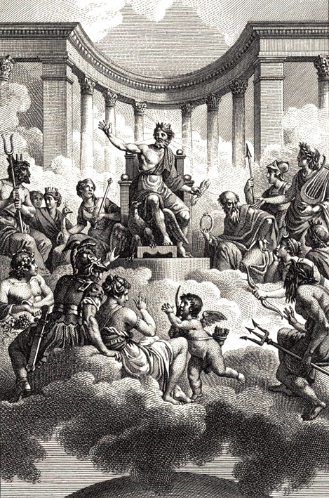
Хоча сучасні греки й нині використовують давні грецькі назви планет, інші європейські мови під впливом Римської імперії та згодом Католицької церкви переважно закріпили римські (латинські) назви замість грецьких. Римляни, як і греки, успадкували праіндоєвропейську міфологію й мали з ними спільний пантеон під іншими іменами, однак не володіли такою розвиненою наративною традицією, яку грецька поетична культура надала своїм богам. У пізній період Римської республіки римські автори запозичили значну частину грецьких міфів і застосували їх до власного пантеону, настільки, що різниця між грецькою й римською міфологією майже зникла. Вивчаючи грецьку астрономію, римляни надали планетам імена власних богів: Меркурій (замість Гермеса), Венера (Афродіти), Марс (Ареса), Юпітер (Зевса) і Сатурн (Кроноса). Водночас єдиної думки щодо відповідності богів і планет не існувало: за свідченням Плінія Старшого, хоча зв'язок Фаенона й Фаетона із Сатурном та Юпітером відповідно був загальновизнаним, Піройс також пов'язували з напівбогом Геркулесом, Стільбон — із Аполлоном, богом музики, зцілення й пророцтва, а Фосфор — із богинями Юноною та Ісідою. Деякі римляни, дотримуючись уявлення, що, ймовірно, виникло в Месопотамії та розвинулося в елліністичному Єгипті, вважали, що сім богів, іменами яких названо планети, по черзі щогодини опікуються земними справами. Послідовність змін була такою: Сатурн, Юпітер, Марс, Сонце, Венера, Меркурій, Місяць (від найдальшої до найближчої планети). Відповідно, перший день починався з Сатурна (1-ша година), другий — з Сонця (25-та година), далі йшли Місяць (49-та година), Марс, Меркурій, Юпітер і Венера. Оскільки кожен день називали на честь бога, який його розпочинав, саме в такому порядку сформувалися назви днів тижня в римському календарі[204]. В англійській мові Saturday, Sunday і Monday є прямими перекладами цих римських назв. Інші дні отримали імена на честь Тюра (вівторок), Вотана (середа), Тора (четвер) і Фрігг (п'ятниця) — англосаксонських богів, яких вважали відповідниками Марса, Меркурія, Юпітера й Венери.
Назва Землі не походить від греко-римської міфології. Оскільки її наукова спільнота визнала планетою лише у XVII столітті, традиції називати її на честь божества не склалося. (Те саме, принаймні в українській мові, стосується Сонця й Місяця, хоча їх більше не вважають планетами.) Багато романських мов зберігають давнє римське слово терра (або його варіанти), яке означало «суходіл» на противагу «морю». Нероманські мови використовують власні питомі назви. Греки зберегли первісну назву Гея.
Неєвропейські культури використовують інші системи найменування планет. В Індії застосовують систему, засновану на навґразі, яка охоплює сім традиційних планет, а також висхідний і низхідний місячні вузли — Раху та Кету. Сім «планет» мають такі назви: Сур'я — Сонце, Чандра — Місяць, Будха — Меркурій, Шукра («яскравий») — Венера, Мангала (бог війни) — Марс, Брігаспаті (радник богів) — Юпітер, і Шані (символ часу) — Сатурн.
Традиційні назви більшості планет у перській мові ґрунтуються на ототожненні месопотамських богів з іранськими — за аналогією з грецькими та латинськими назвами. Меркурій називають Тір (перс. تیر) — на честь західноіранського бога Тірії (покровителя писарів), що відповідає Набу; Венеру — Нахід (ناهید), на честь Анахіти; Марс — Ваграм (بهرام), на честь Веретрагни; Юпітер — Гормоз (هرمز), на честь Ахура-Мазди. Перська назва Сатурна — Кейван (کیوان) — є запозиченням з аккадської kajamānu, що означає «постійний, незмінний»
У Китаї та країнах Східної Азії, які історично перебували під китайським культурним впливом (зокрема в Японії, Кореї та В'єтнамі), використовують систему найменувань, засновану на п'яти китайських елементах: вода (Меркурій — 水星, «водяна зоря»), метал або золото (Венера — 金星, «золота зоря»), вогонь (Марс — 火星, «вогняна зоря»), дерево (Юпітер — 木星, «дерев'яна зоря») та земля або ґрунт (Сатурн — 土星, «ґрунтова зоря»).
У традиційній єврейській астрономії сім класичних планет здебільшого мають описові назви: Сонце — חמה Ḥammah («гарячий»), Місяць — לבנה Levanah («білий»), Венера — כוכב נוגה Kokhav Nogah («яскрава планета»), Меркурій — כוכב Kokhav («планета», з огляду на відсутність виразних ознак), Марс — מאדים Ma'adim («червоний»), Сатурн — שבתאי Shabbatai («той, що відпочиває», з огляду на його повільний рух порівняно з іншими видимими планетами). Винятком є Юпітер, який має назву צדק Tzedeq («справедливість»). Ці назви, вперше засвідчені у Вавилонському Талмуді, не є первісними єврейськими назвами планет. У *377 році Епіфаній Саламінський зафіксував інший набір назв, що, ймовірно, мав язичницьке або ханаанське походження; з релігійних міркувань їх згодом замінили, хоча вони, вочевидь, були історичними семітськими назвами й могли мати значно давніше коріння, яке сягає вавилонської астрономії. Етимологія арабських назв планет вивчена гірше. Серед учених загалом погоджуються щодо Венери (араб. الزهرة, az-Zuhara, «яскрава»), Землі (الأرض, al-ʾArḍ, з того самого кореня, що й eretz) та Сатурна (زُحَل, Zuḥal, «той, що віддаляється»). Для Меркурія (عُطَارِد, ʿUṭārid), Марса (اَلْمِرِّيخ, al-Mirrīkh) та Юпітера (المشتري, al-Muštarī) запропоновано кілька етимологій, однак серед дослідників немає єдиної думки.
Після відкриття нових планет у XVIII—XIX століттях Уран отримав назву на честь грецького божества, а Нептун — на честь римського (відповідника Посейдона). Астероїди спочатку також називали міфологічними іменами — Церера, Юнона і Веста є головними римськими богинями, а Паллада — епітет грецької богині Афіни. Із відкриттям дедалі більшої кількості таких тіл спершу почали використовувати імена другорядних богинь, а з 1852 року, починаючи з двадцятого астероїда Массалія, обмеження на міфологічні назви взагалі скасували. Плутон (названий на честь грецького бога підземного світу) також отримав класичну назву, оскільки на момент відкриття його вважали великою планетою.
Назви Урана (天王星 «зоря небесного царя»), Нептуна (海王星 «зоря морського царя») і Плутона (冥王星 «зоря володаря підземного світу») в китайській, корейській і японській мовах є кальками, утвореними за ролями відповідних богів у римській та грецькій міфології. У XIX столітті Александер Вайлі та Лі Шаньлань створили китайські кальки назв перших 117 астероїдів, і багато з них уживають досі, зокрема Церера (穀神星 «зоря богині зерна»), Паллада (智神星 «зоря богині мудрості»), Юнона (婚神星 «зоря богині шлюбу»), Веста (灶神星 «зоря богині вогнища») та Гігіея (健神星 «зоря богині здоров'я»). Такі переклади поширили й на деякі пізніше відкриті малі планети, зокрема на частину карликових планет XXI століття, наприклад Гаумеа (妊神星 «зоря богині вагітності»), Макемаке (鳥神星 «зоря богині птахів») та Еріда (鬩神星 «зоря богині чвар»). Водночас, за винятком найвідоміших астероїдів і карликових планет, більшість таких назв рідко зустрічаються поза межами китайських астрономічних словників[218].
У 2009 році обрали єврейські назви для Урана (אורון Орон, «малий світильник») і Нептуна (רהב Рагаб, біблійне морське чудовисько)[222]. До того для цих планет просто запозичували назви «Уран» і «Нептун».
Після відкриття об'єктів за орбітою Нептуна запровадили правила найменування залежно від їхніх орбіт: тіла в резонансі 2:3 з Нептуном (так звані плутіно) отримують імена з міфів про підземний світ, а інші — з міфів про творіння. Більшість транснептунових об'єктів названо на честь богів і богинь інших культур (наприклад, Квавар має ім'я божества народу тонгва). Є й винятки, що продовжують римсько-грецьку традицію, зокрема Еріда, оскільки спочатку її вважали десятою планетою.
Супутникам (зокрема планетної маси) зазвичай надають назви, пов'язані з їхньою материнською планетою. Супутники Юпітера планетної маси названі на честь чотирьох коханок/коханців Зевса; супутники Сатурна — на честь братів і сестер Кроноса, титанів; супутники Урана — на честь персонажів творів Шекспіра та Поупа (спочатку — саме з фейрійської міфології, але ця практика завершилася з найменуванням Міранди). Супутник планетної маси Нептуна Тритон має ім'я сина бога моря; супутник планетної маси Плутона Харон названий на честь перевізника душ померлих, який доправляє їх до підземного світу — володіння Плутона.